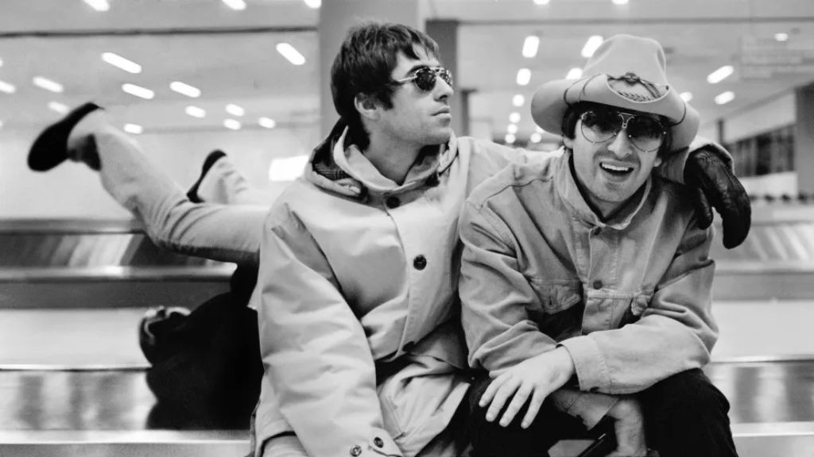

Oasis Keyboardist Reveals Truth Behind Gallagher Reunion Dynamics

Oasis' longtime live keyboardist has lifted the curtain on what life was really like behind the scenes of the band's massive reunion tour—and weighed in on whether fans should expect another run of shows in 2026.
In August 2024, the Gallagher brothers sent shockwaves through the music world by announcing Live ’25, their first tour together in 16 years. What followed was a whirlwind: a triumphant run of UK dates; a globe-spanning schedule; and a final, explosive encore in São Paulo on November 23. By the end, the reunited Britpop giants had played 41 shows across 142 days - an odyssey as chaotic as it was historic.
Now, keyboardist Christian Madden has shared his own reflections in a candid Substack post, calling the experience from what he jokingly calls "the humble perspective of the least famous person in the most famous band trotting the globe this year." For him, this past year was nothing short of unforgettable.
But of course, the real question everyone wants to know is: how did Liam and Noel actually get along? Madden dispels the cynicism. "Yes, they did," he writes. It wasn't an exaggerated dynamic for cameras and fans, just two brothers being "genuinely warm" after years of tension, rebuilding a relationship cautiously. "What you saw was real."
He also remembers the tour's crowds and singles out the second night in Buenos Aires as a true high point-an explosion of energy after an hour-plus wait caused by safety checks.
As far as rumors of new dates in 2026 go, however, Madden keeps expectations in check. “I get asked that a lot,” he says. When it comes to any future plans for the Gallaghers, though, he jests that he's hardly in the know: "Do you honestly think I know? I'm a worker ant when all's said and done."
This dispatch was last updated on November 28, 2025